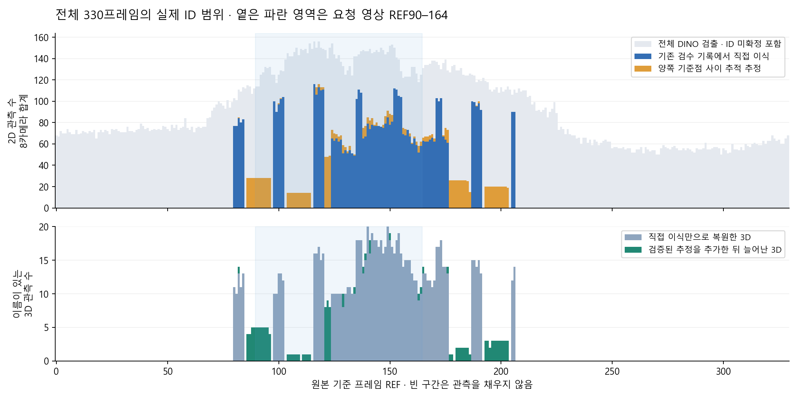
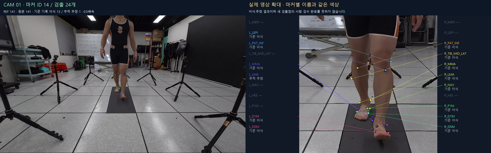

기존 마커 이름을 적용한 2D·3D 확인
같은 촬영에서 검수했던 이름을 현재 DINO 검출점에 이식하고, 양쪽 기준점 사이에서 보수적으로 추적한 ID를 구분해 표시합니다. 대상은 좌우 발·발목·정강이·무릎의 22개 마커 이름입니다.
원래 검출 좌표 보존 · ID를 먼저 확인한 뒤 3D 복원요청 구간 · 이름이 있는 실제 마커만 연결
현재 게시 클립의 1.0–3.5초에 해당하는 REF90–164 · 75프레임 · 2.5025초입니다. 원본 대비 0.5배속으로 재생합니다. 이 구간의 3D는 807건, 71/75프레임에 있습니다.
동일한 마커 이름은 2D와 3D에서 같은 색입니다. 추정 ID의 지지가 포함된 3D는 뷰어에서 별표로 구분합니다. 누락된 이름·관측·연결선은 채우지 않습니다.
전체 분석과 재생 클립의 범위
| 집계 | 전체 분석 | 재생 클립 |
|---|---|---|
| 기준 프레임 | REF0–329 · 330 | REF90–164 · 75 |
| DINO 검출 관측 | 30,780 | 10,412 |
| 기존 기록 직접 이식 | 6,012 | 4,070 |
| 추적 추정 ID | 1,295 | 665 |
| ID 미확정 검출 | 23,473 | 5,677 |
| 이름 있는 3D 관측 | 1,197 | 807 |
| 이름 있는 3D가 있는 프레임 | 119 / 330 | 71 / 75 |
관측 수는 프레임마다, 2D는 카메라마다 다시 셉니다. 서로 다른 물리적 마커의 수가 아닙니다. 전체 330프레임 모두에서 ID가 확인된 것은 아닙니다. 전체에서 2D ID가 하나라도 있는 프레임은 121/330입니다.
요청 구간의 3D가 비어 있는 프레임은 97, 103, 110, 115입니다. 해당 프레임의 점과 선을 만들어 넣지 않았습니다.

이름은 어디서 가져왔나
같은 8월20일 보행 trial02의 활성 수동 검수 기록 두 곳에서 명시적 사람 승인 기록이 있는 2D 관측 6,595건을 골랐습니다. 이 기록에는 75개 기준 프레임·8카메라·22개 이름이 포함됩니다.
그중 현재 검출점과 8px 이내로 명확하게 대응한 6,012건을 직접 이식했습니다. 가까운 대안 점·다른 ID와 최소 3px 차이가 없으면 보류했습니다. 새 검출점의 좌표는 원래 DINO 중심입니다.
기존 기록의 사람 승인과 이번 이식 결과를 구분합니다. 이번 DINO ID를 새로 사람이 정답으로 승인했다고 주장하지 않습니다.
추적 추정은 어디까지 허용했나
앞뒤에 같은 이름의 기준 관측이 있고, 양쪽이 각각 12프레임 이내인 실제 영상 흐름 경로만 사용했습니다. 단계별 위치·왕복 흐름·영상 유사도와 전체 경로의 제외 상태를 확인했습니다.
중간 경로가 보류·충돌·승인 취소 상태를 통과한 제안 37건을 제거해 1,295건을 추가했습니다. 내측·외측 무릎 이름 MEPI/LEPI는 추정 확장에서 제외했습니다.
이 1,295건은 추정 라벨입니다. 사람 정답으로 승격하지 않으며, 같은 프레임·같은 카메라의 실제 검출만 가리킵니다.
추적 검증 수치를 읽는 방법
| 별도로 가린 기존 정답 | 실제로 예측한 정답 위치 | 그중 맞음 | 정답 위치 예측 범위 | 정답이 없어 채점하지 못함 |
|---|---|---|---|---|
| 1,703 | 441 | 441 / 441 | 25.9% | 10 |
예측한 기존 정답 위치에서는 441/441개가 맞았습니다. 기존 정답 1,703개 중 예측한 범위는 25.9%입니다. 정답 없는 10개 예측은 채점하지 못했습니다. 이 결과는 전체 프레임·전체 추정 ID의 정확도 100%를 뜻하지 않습니다.
2D 확인을 통과한 뒤에만 같은 이름으로 3D 복원
카메라 보정과 동기화 오프셋을 그대로 사용했습니다. 한 프레임에서 동일한 명시적 마커 이름을 가진 카메라 3대 이상이 지지하고, 최종 각 관측의 재투영 오차가 8px 이하, 지지 카메라 깊이가 5cm 초과일 때만 복원했습니다. 기하 계산으로 새 이름을 붙이지 않습니다.
| 같은 3D 조건 | 이름 있는 3D 관측 | 3D가 있는 전체 기준 프레임 |
|---|---|---|
| 직접 이식 라벨만 사용 | 1,050 | 75 / 330 |
| 경로 검수를 통과한 추정까지 사용 | 1,197 | 119 / 330 |
직접 이식 기준의 1,050개 마커·프레임 조합은 모두 유지했고, 147개 조합이 추가되었습니다. 전체 재투영 RMS 중앙값은 3.526px, 요청 구간은 3.461px입니다.
독립 숫자·출처 검수 통과. 실제 카메라 관측 4,737건을 확인했습니다. 재계산한 최대 관측 오차는 7.994px, 최소 지지 카메라 깊이는 0.656m입니다. 이 검사는 독립적인 해부학적 정답 정확도 검사가 아닙니다.
관측 범위 증가는 정확도 개선의 증명이 아닙니다. 재투영 오차도 독립적인 실제 3D 정답에 대한 절대 위치 오차가 아닙니다. 연결선은 같은 쪽의 기존 마커 배치 관계를 보여 주며 관절 위치를 새로 생성하지 않습니다.
카메라별 실제 이름·미확정점 확인

왼쪽은 전체 영상, 오른쪽은 같은 실제 프레임의 확대입니다. 이름 없는 회색 검출점도 유지합니다. “기준 기록 이식”과 “추적 추정”을 영상에서 구분합니다.
원본 데이터·개인 로컬 경로·학습 가중치·비공개 검수 기록은 이 공유 페이지에 포함하지 않았습니다. 저장된 실제 결과로만 집계했습니다.